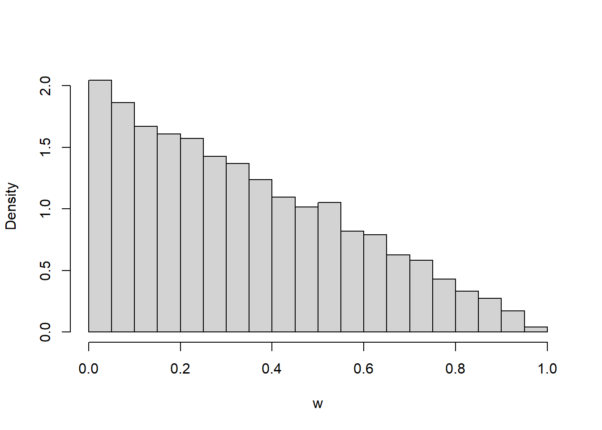

Homework 3 Solutions
Problem 1
(This is an overly simplified example from actuarial science.) A life insurance company sells a term insurance policy to a 21 year old man (the “insured”) that pays $100,000 to a designated beneficiary if the insured dies within the next 5 years, and pays nothing if the insured does not die before age 26. The probability that a randomly chosen 21-year-old man will die each year can be found in mortality tables. The company collects a premium of $250 at the beginning of each year of the 5 years of the term, as long as the insured is alive, as payment for the insurance. The amount \(Y\) (in dollars) that the company earns on this policy is $250 per year, less the $100,000 that it pays out in the event the insured dies. The company doesn’t pay out anything if the insured does not die in the 5 year term.
| Age at death | Earnings \(Y\) | Probability |
|---|---|---|
| 21 | 99,750 | 0.00183 |
| 22 | 0.00186 | |
| 23 | 0.00189 | |
| 24 | 0.00191 | |
| 25 | 0.00193 | |
| 26 or older |
- Find the distribution of \(Y\) by completing the above table. For example, the value -99,750 provides an example of how \(Y\) is calculated when the insured dies in the first year of the policy.
- Compute \(\text{E}(Y)\).
- Write a sentence explaining in this context in what sense the number from the previous part is “expected”.
- Would you be willing to sell such an insurance policy to one of your 21 year old friends? Explain why this is good business for the insurance company, but not for you.
- Compute \(\text{Var}(Y)\)
- Compute \(\text{SD}(Y)\).
- Compute the probability that \(Y\) is more than 1 standard deviation above its mean.
Solution
| Age at death | Earnings \(Y\) | Probability |
|---|---|---|
| 21 | 99,750 | 0.00183 |
| 22 | -99,500 | 0.00186 |
| 23 | -99,250 | 0.00189 |
| 24 | -99,000 | 0.00191 |
| 25 | -98,750 | 0.00193 |
| 26 or older | 1,250 | 0.99058 |
See above. The earnings are computed according to the contract; the insurance company only needs to pay out the 100000 if the insured dies before age 26. Since all the probabilities must add up to 1, the probability in the blank is \(1 - (0.00183 + 0.00186 + 0.00189 + 0.00191 + 0.00193) = 0.99058\)
\(\text{E}(Y) = (-99750)(0.00183) + \cdots + (-98750)(0.00193) + (1250)(0.99058) = 303.23\)
If the insurance company sells a large number of these policies to 21 year-old men then the insurance company will expect to make, on average, a profit of $303.36 per policy. For example, if they sell 1 million policies, their total profit would be expected to be close to $303 million.
If you sell one policy, you are either going to make a profit of $1250, or you will pay out about $100,000. The chances are high you will make a profit of $1250, but there is a risk that you will have to pay out around $100,000. This risk is probably too great to take on considering the relatively small (in comparison) reward.
On the other hand, the insurance company sells many policies. They operate in the long run. Over many policies they make a profit, on average, of about $300 per policy. For example, for a million policies this equates to a profit of $300 million. There would be some variability around this, but in the long run the average will win out. The company could be sure that they would only pay out the $100,000 benefit for less than 1% of policyholders, and they will be earning $1,250 on many other policies, more than enough to offset the relatively few $100,000 payouts there are.
\(\text{E}(Y^2) = (-99750)^2(0.00183) + \cdots + (-98750)^2(0.00193) + (1250)^2(0.99058) = 94328849\). Then \(\text{Var}(Y) = \text{E}(Y^2) - (\text{E}(Y))^2 = 94328849 -(303)^2 = 94236827\). This is a giant number because it’s measured in \(\text{dollars}^2\).
\(\text{SD}(Y) = \sqrt{\text{Var}(Y)} = 9707\) dollars.
- One SD above the mean here is 303 + 9707 = 10000 and \(\text{P}(Y > 10000) = 0\) since it’s not possible to have a value of this \(Y\) which is more than 1 SD above its mean.
Problem 2
In a certain population, household income \(X\) ($ thousands) follows the pdf \[ f_X(x) = c x^{-2.5}, \quad x \ge 30 \] for an appropriate constant \(c\). Note that the measurement units are $ thousands, so 1 represents 1 thousand dollars.
- What are the possible values of \(X\)? Sketch the pdf of \(X\).
- Find the value of \(c\).
- Find the probability that a household has an income over $200K.
- Find the probability that a household has an income exactly equal to $200K.
- Without integrating, find the probability that a household has an income, rounded to the nearest thousand dollars, of $200K.
- Without integrating, determine how many times more likely it is for a household to have an income, rounded to the nearest thousand dollars, of $100K than $200K.
Solution
- The smallest possible value of \(X\) is 30 (thousand dollars). The pdf has a peak at 30 and decreases as \(x\) increases. The density is 0 for \(x<30\). We can sketch the general shape of \(f(x)\) without knowing the value of \(c\); \(c\) just tells us how to label the density axis so the total area under the curve is 1.
- \(c\) is such that the total area under the curve is 1 \[ 1 = \int_{30}^\infty c x^{-2.5} dx = c 30^{-1.5}/1.5 \] Solve for \(c= (1.5)30^{1.5}=246.5\). That is \[ f_X(x) = (1.5)(30^{1.5}) x^{-2.5}, \quad x \ge 30 \]
- The probability that a household has an income over $200K is \[ \text{P}(X > 200) = \int_{200}^\infty (1.5)30^{1.5} x^{-2.5} dx = (30/200)^{1.5} = 0.058 \] About 5.8% percent of households in this area have an income over 200 thousand dollars.
- \(X\) is continuous so \(\text{P}(X = 200) = 0\)
- In the measure units of \(X\), 1 thousand dollars is 1 unit long, a small range in the scale of the variable. Can integrate but since it’s a small range of values in the scale of the variable, can approximate \[ \text{P}(200 - 0.5 < X < 200 + 0.5) \approx f_X(200)(1) = (1.5)30^{1.5}200^{-2.5}(1) = 0.000436 \] About 0.04% of households in this area have an income, to the nearest thousand dollars, of 200 thousand dollars.
- Ratio of the densities; note we don’t need to know the value of \(c\) to solve this part. \[ \frac{f_X(100)}{f_X(200)} = \frac{100^{-2.5}}{200^{-2.5}} = 5.66 \] In this area, a household is 5.66 times more likely to have an income, rounded to the nearest thousand dollars, of $100K than $200K.
Problem 3
In the meeting time problem, assume that Regina’s \(R\) and Cady’s \(Y\) arrival times (measured in fractions of the hour after noon, e.g. 0.25 represents 12:!5), each follow a Uniform(0, 1) distribution, independently of each other. Let \(W = |R - Y|\) be the amount of time (hours) the first person to arrive waits for the second person to arrive. It can be shown that \(W\) has pdf \[ f_W(w) = 2(1-w), \qquad 0<w<1. \]
- Sketch a plot of the pdf. Describe roughly what this means in context.
- Coding required. Code and run a simulation to approximate the distribution of \(W\). Does the histogram reasonably match up with the pdf? Then use the simulation results to approximate \(\text{P}(W < 0.25)\).
- Use the pdf to compute \(\text{P}(W < 0.25)\) and interpret the value. Set up an integral, but sketch a picture and use geometry to compute.
Solution
- See plot below. The density is highest at \(w=0\) and decreases linearly to 0 at \(w=1\). Waiting time is most likely to be close to 0 minutes, and likelihood of waiting close to \(w\) hours decreases as \(w\) increases.
- See simulation results below. pdf seems reasonable.
- Integrate the pdf over \((0, 0.25)\). This gives an area of a trapezoid; the complementary area is a triangle with a base of (1 - 0.25), a height of \(2(1-0.25)\), and an area of \((1/2)(1-0.25)(2(1-0.25)) = (1-0.25)^2\) \[ \text{P}(W < 0.25) = \int_0^{0.25} 2(1-w)dw = -(1-w)^2 \Big\vert_{w =0}^{w=0.25} = 1 - (1-0.25)^2 = 0.4375 \] If they meet over many days, on any 43.75% of days the first person will have to wait less than 15 minutes for the second person.
N_rep = 10000
x = runif(N_rep, 0, 1)
y = runif(N_rep, 0, 1)
w = abs(x - y)
hist(w,
freq = FALSE,
main = "")
sum(w < 0.25) / N_rep[1] 0.4376Problem 4
(Continued.) In the Regina/Cady problem, let \(W=|R-Y|\) be the amount of time the first person to arrive has to wait for the second person. Recall that \(W\) is a continuous random variable with pdf \[ f_W(w) = 2(1-w), \quad 0 < w < 1. \]
- Coding required. Use your simulation results from before to approximate \(\text{E}(W)\), \(\text{E}(W^2)\), \(\text{Var}(W)\), and \(\text{SD}(W)\).
- Compute and interpret \(\text{E}(W)\).
- Compute \(\text{E}(W^2)\).
- Compute \(\text{Var}(W)\)
- Compute \(\text{SD}(W)\).
- Explain in words in detail how you could use the Uniform(0, 1) spinner and simulation to approximate \(\text{Var}(W)\).
- Compute the probability that \(W\) is more than 1 SD away from its mean.
Solution
mean(w)[1] 0.3337315mean(w ^ 2)[1] 0.1675453var(w)[1] 0.05617417sd(w)[1] 0.2370109- See above.
- Use the definition of EV for continuous RV \[ \text{E}(W) = \int_0^1 w f_W(w) dw = \int_0^1 w\left(2(1-w)\right)dw = 1/3 \] If they were to meet like this over many days, the long run average waiting time will be 1/3 hour (20 minutes).
- Use LOTUS \[ \text{E}(W^2) = \int_0^1 w^2 f_W(w) dw = \int_0^1 w^2\left(2(1-w)\right)dw = 1/6 \]
- We did all the work in the previous parts. \(\text{Var}(W) = \text{E}(W^2) - \text{E}(W)^2 = 1/6 - (1/3)^2 = 1/18\) square-hours.
- \(\text{SD}(W) = 0.236\) hours (about 14 minutes)
- Explain how you could use the Uniform(0, 1) spinner and simulation to approximate \(\text{Var}(W)\).
- Spin the Uniform(0, 1) spinner twice to get \(R, Y\) and set \(W=|R-Y|\).
- Repeat many times to simulate many values of \(W\).
- Average the values of \(W\).
- For each simulated value of \(W\), subtract the average of \(W\) and square to get the squared deviation
- Average the squared deviations to approximate \(\text{Var}(W)\).
- \(\text{P}(|W-\text{E}(W)|>\text{SD}(W)) = \text{P}(W>1/3 + 0.236) + \text{P}(W < 1/3 - 0.236)\). In this case you can find the corresponding probability/area in this case with geometry. Also, integrating gives \[ \int_0^{1/3 - 0.236} 2(1-w)dw + \int_{1/3 + 0.236}^1 2(1-w)dw = 0.37 \]